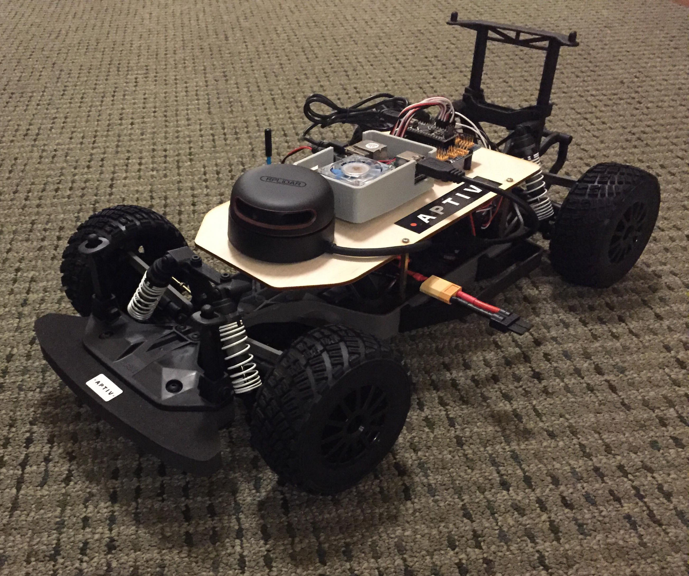

Petya and Mischa are two model race cars outfitted with technology for autonomous driving. Using the RC vehicle platform developed by the Model Predictive Control Lab at UC Berkeley, we have further implemented lane-keeping and obstacle avoidance functionalities, made possible by using computer vision reinforced with spatial sensing (lidar). This initiative is sponsored by Aptiv PLC, formerly known as Delphi Automotive. Our aim as a student group is to leverage our diverse engineering disciplines in bringing advancements to the burgeoning field of self-driving cars.